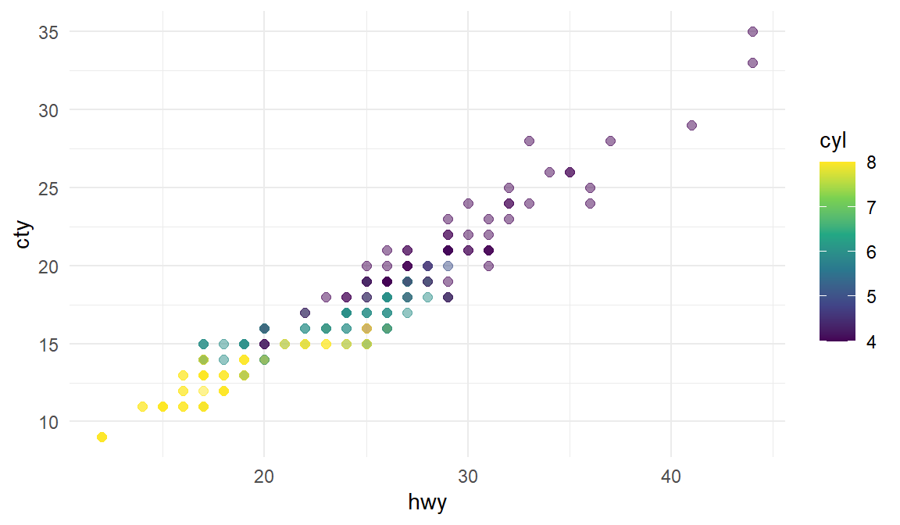
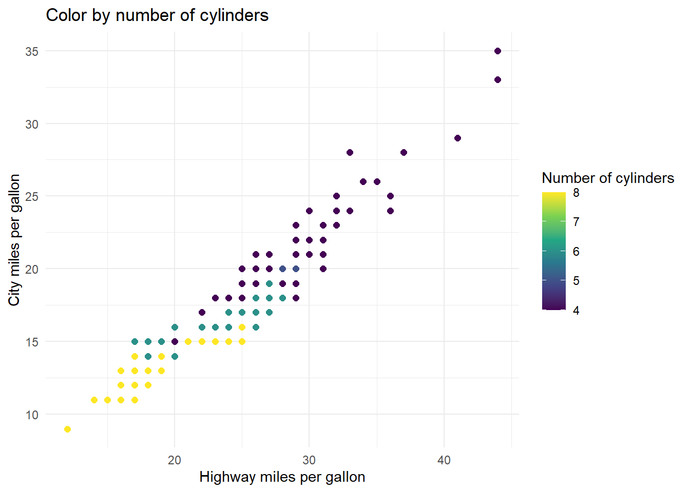
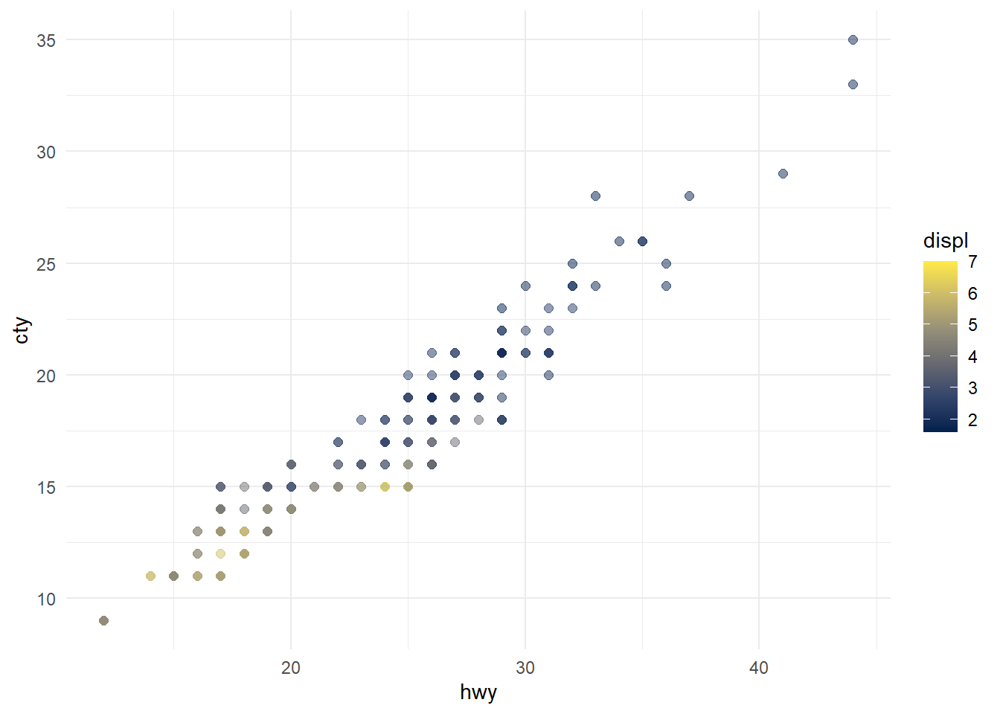

Quarto Computations
This dataset contains a subset of the fuel economy data from the EPA. Specifically, we use the mpg dataset from the ggplot2 package.
Figure 1 shows a positive, strong, and linear relationship between the city and highway mileage of these cars. Additionally, mileage is higher for cars with fewer cylinders.
ggplot(mpg, aes(x = hwy, y = cty, color = cyl)) +
geom_point(alpha = 0.5, size = 2) +
scale_color_viridis_c() +
theme_minimal()

The plots in Figure 2 show the relationship between city and highway mileage for 38 popular models of cars. In Figure 2 (a) the points are colored by the number of cylinders while in Figure 2 (b) the points are colored by engine displacement.
ggplot(mpg, aes(x = hwy, y = cty, color = cyl)) +
geom_point(alpha = 1, size = 2) + # alpha是设置透明度
scale_color_viridis_c() +
# 用于映射连续型（continuous）变量到颜色
# viridis 包提供了一些色盲友好的调色板
# 后缀 _c 表示连续型变量
# option 参数指定调色板的具体样式，E是其中一种
theme_minimal() +
labs(title = "Color by number of cylinders",
x = "Highway miles per gallon",
y = "City miles per gallon",
color = "Number of cylinders")
ggplot(mpg, aes(x = hwy, y = cty, color = displ)) +
geom_point(alpha = 0.5, size = 2) +
scale_color_viridis_c(option = "E") +
theme_minimal()


The average city mileage of the cars in our data is 16.86 and the average highway mileage is 23.44.